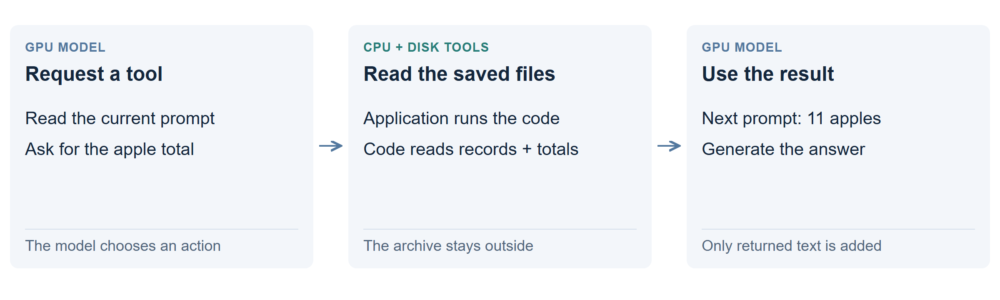

How the model uses files
The model works in GPU memory. Files hold records outside it. A tool can read those records and return an excerpt or a calculated result for the model’s next call.

What is stored where?
- On disk: readable records
- Batch files, scripts, notes and saved totals. They can outgrow the context window because the model does not read them all at once.
- In the application: the next prompt
- The selected instructions, messages and tool results. “Live conversation” means this working message history, not every past message saved anywhere.
- In GPU memory: the model and its numerical state
- The server turns the prompt’s tokens into the internal state used to generate a reply. The attention cache, often called the KV cache, stayed on the GPUs in these tests.
These file-using runs did not decode from an SSD. Reading a file was a tool step between model calls. Only text returned to the model entered its active context; a script could process much more without printing it.
How does it know to read a file?
The application must provide file tools; instructions alone do not give the model disk access.
- The prompt sets the task and permissions. Here it described the ledger rules and explicitly allowed saved notes and data in the file-using runs.
- The model requests a command. It chooses what to save, search or calculate and supplies a shell command or Python code.
- The application runs it. The CPU reads the files and executes the code. Its output becomes a tool result in the next prompt.
- The model continues from that result. It can request another tool step or answer.
For example, the model can ask code for the current apple total and receive “11.” It need not read every apple transaction itself. There was no separate retrieval model or vector database in this ledger workflow.
A filename alone provides no memory. For a resumed job, supply the goal, a short state or file index, and access to the records. The agent must then request the right files, or the application must load them.
Is any file loaded automatically?
Yes, when the application gives it that special role. Accepted edits to the CLM transcript file become the next message history. Revised CLM also reloads STATE.txt on every call; all of its contents count against the context budget. Ordinary archive files have neither behavior.
Compare CLM’s context files with an external archive.
Read the prompts and model setup
All ledger approaches used Qwen3.8-27B, with FP8 weights, a 16-bit attention cache and two Intel Arc Pro B70 GPUs. The server’s full window was 262,144 tokens; small-context arms used a 32K working budget. The model was not fine-tuned for these tasks. The same model also made the periodic summaries.
The input combined a task template, a storage rule and agent instructions. The links below show those source components; task generation fills in the batch and token counts.
- Ledger task: update rules and final questions
- Storage rules: context only, or files allowed
- Original CLM: how to edit the transcript
- Revised CLM: the state-file protocol used for these trials
- Plain agent and periodic-summary instructions
The revised-protocol link preserves the version used before the later verified-update helper. Full run configuration.